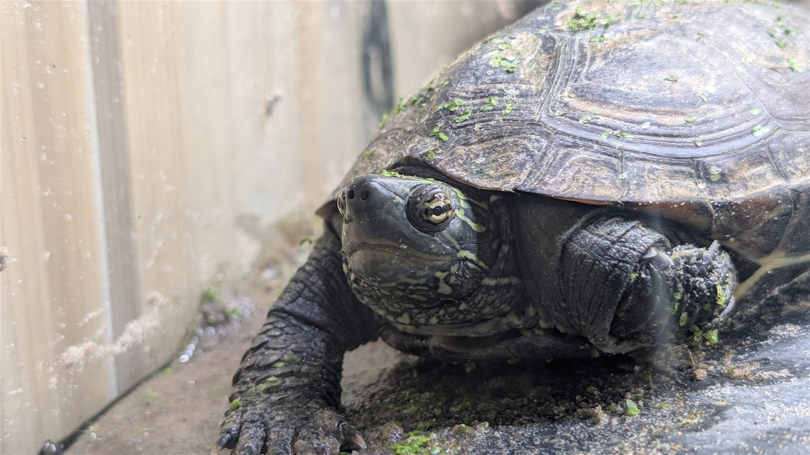
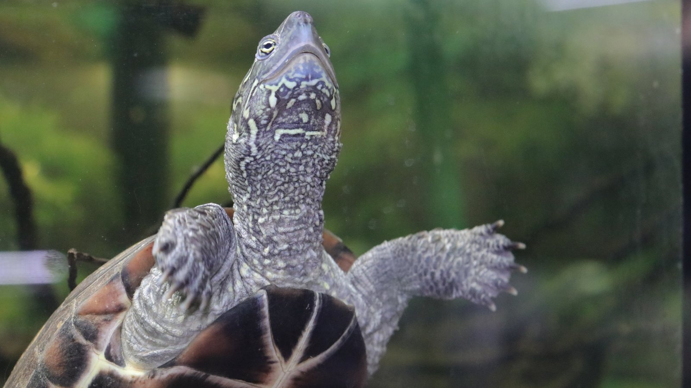
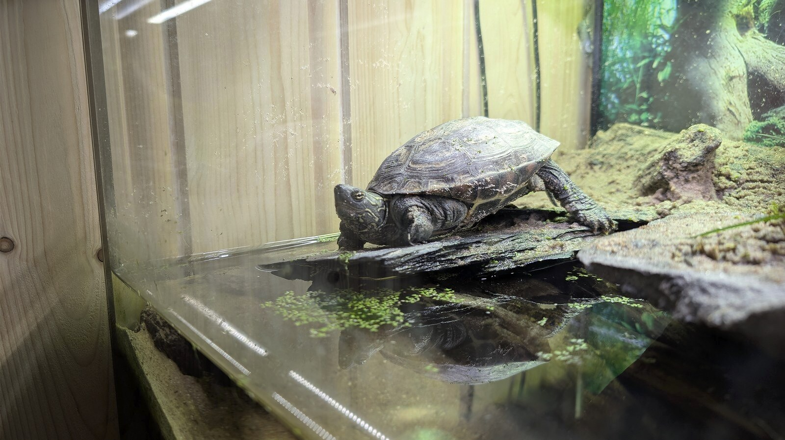

Reeves's turtle is a freshwater turtle from East Asia. It moves between water and a dry basking area, so swimming, thermoregulation, and access to ultraviolet light all shape daily life. [3]
Species profile · Sonja
Mauremys reevesii
Meet Sonja
Sonja is the Reeves’s turtle currently in my care and the only vertebrate in the collection. Her portrait shows the patterned head, textured forelimbs and shell as she rests on a basking ledge.

Scientific nameMauremys reevesii
FamilyGeoemydidae
Native rangeEast Asia
TaxonomyAccepted species
SexConfirmed female
In the wild
Natural history.
The three raised keels on the shell are especially noticeable in younger animals. Facial markings and shell texture make Sonja easy to recognise across her photographs. [3]
Sonja's record centres on clean water, a fully accessible basking area, heat and UVB, varied feeding, and tracked growth. She is the collection's only vertebrate.
Taxonomy and range
Mauremys reevesii is a geoemydid freshwater turtle native to East Asia. Authoritative range summaries place native populations across temperate and subtropical China and the Korean Peninsula, with the status of populations elsewhere complicated by introductions and historical movement. [1] [2] [3]
What the record can show
Sonja’s profile is intentionally separate from the invertebrate taxonomy used elsewhere on the site. Her section will develop around aquatic behaviour, habitat use, and verified keeper observations rather than forcing a turtle into a spider-oriented template.
Conservation context
Status, trade & uncertainty.
IUCN evaluates extinction risk; CITES regulates international trade. They answer different questions, and missing data should remain visible. [4] [5]
Endangered · 2011
The IUCN/SSC turtle specialist account reports an Endangered global assessment from 2011. That date remains part of the claim; consult the live Red List for any subsequent assessment. [3]
CITES Appendix III
China included the species in Appendix III, requesting international cooperation in controlling trade. [5]
What the evidence supports
Published accounts identify wetland change, collection and consumption, pollution, and movement of farmed or released turtles as conservation concerns. [3]
Make provenance visible
Never release a captive turtle. Retain origin records and plan for lifelong care; releases can move disease and complicate already mixed wild and introduced populations.
Sources reviewed 3 November 2026. Historical assessment dates are retained. Assessment uncertainty is not evidence of low risk; national requirements may differ from CITES.
Life in the collection
Meet Sonja.
Sonja is the only vertebrate in the current collection. Her profile follows her as an individual—from the home shown in the accompanying video to the measurements and observations selected from her Codex record—while keeping turtle biology separate from the spider profiles.


From Instagram
Posts & reels.
Personal observations
From the Codex.
Introvertebrates Codex
Sonja · care history
Time in care, feeding records, moults and measurements. These are observations from the Introvertebrates collection, not species-wide averages.
Collection records are not available here yet.
Private notes and identifying details are kept off the website.
Continue exploring
Related profiles.


Read further
Sources.
- 1. The Reptile Database — Mauremys reevesiiView the source.
- 2. U.S. Geological Survey — species profileView the source.
- 3. IUCN/SSC turtle species accountView the source.
- 4. IUCN — Red List Categories and Criteria, version 3.1 (assessment definitions)View the source.
- 5. CITES — Appendices I, II and III (valid from 5 March 2026)View the source.